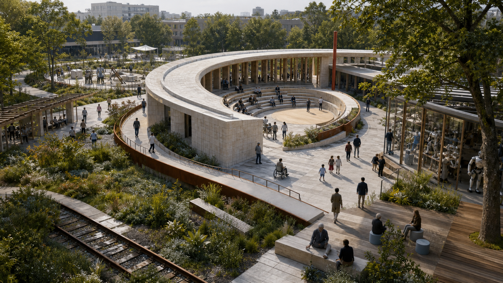
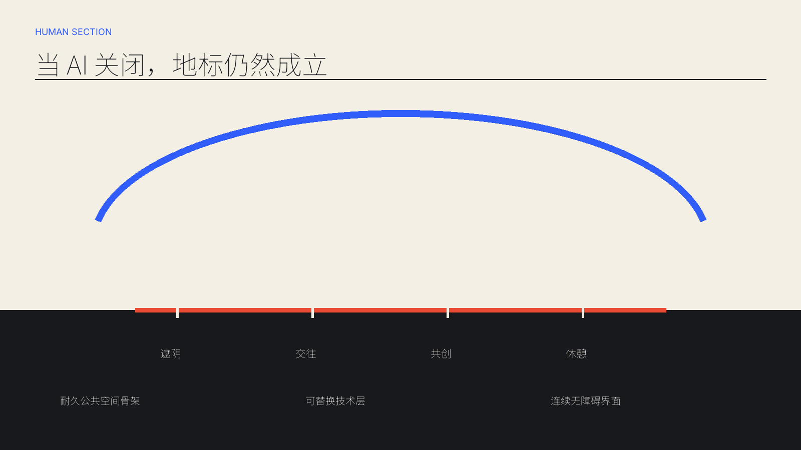
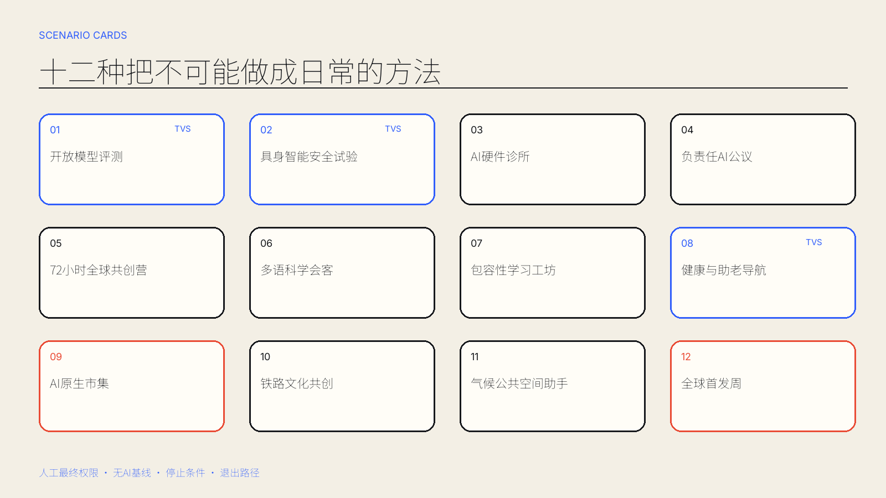
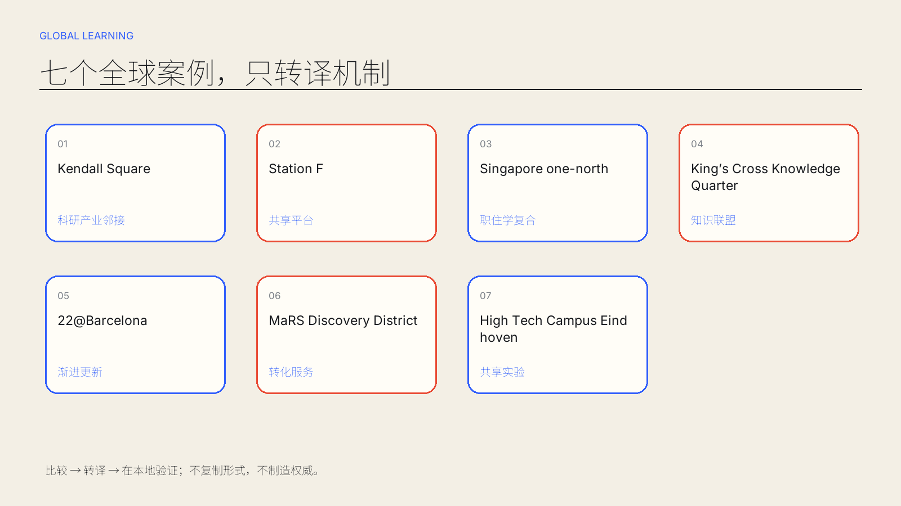
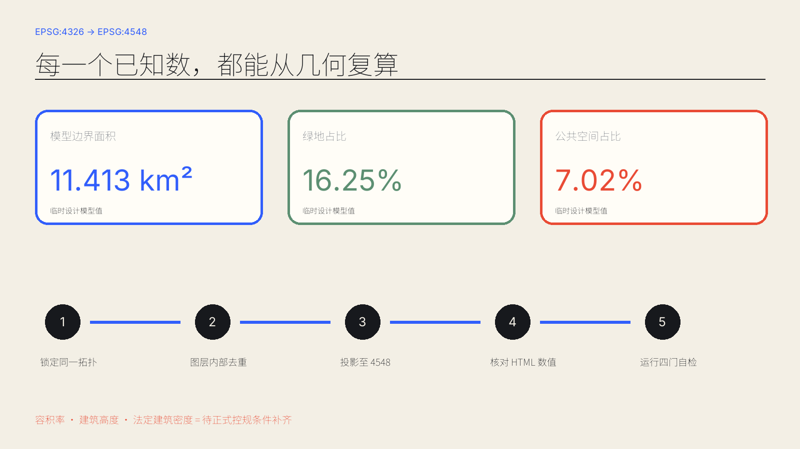

?
把不可能，做成城市日常。
一场 · 三磁极 · 两轨道
把不可能，做成城市日常。



临时粗略边界——不是官方红线
交互引力场：按 1、2、3 聚焦磁极，按 R 复位。

容积率、建筑高度与法定建筑密度均待官方控制条件补齐。




总览地图 · 三层范围 · 重点区域 · 用地分区 · 交通慢行 · 蓝绿公共空间 · 建筑 · 更新项目 · AI 场景 · 核心指标 · 任务覆盖 · 自检状态 · 来源 · 假设


主要依据：官方公告、清权任务书与本地标准快照。全球案例仅作机制比较。结构化 GeoJSON/JSON 优先于展示媒体。